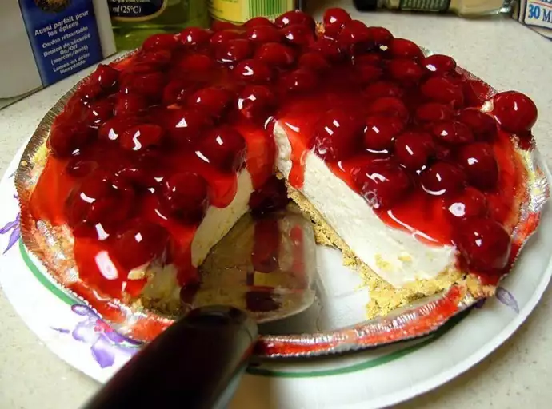

CHERRY CHEESECAKE

This cherry cheesecake is a cross between a cherry cheesecake and a cherry
cream cheese pie. It is delicious!
Ingredient
- 1 (14 ounce) can sweetened condensed milk
- 1 (8 ounce) package cream cheese, softened
- ⅓ cup lemon juice
- 1 teaspoon vanilla extract
- 1 (9 inch) prepared graham cracker crust
- 1 (21 ounce) can cherry pie filling
Steps
- Gather the ingredients.
-
Place condensed milk, softened cream cheese, lemon juice, and vanilla
into a mixing bowl; beat until well blended.
-
Pour mixture into pie crust. Chill in the refrigerator for 5 hours; do
not freeze.
- Pour cherry pie filling on top of pie; serve.
Back